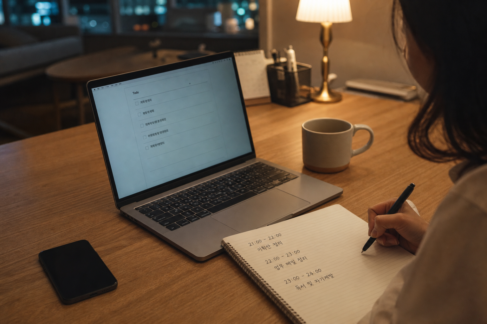

본업 하면서 부동산 공부까지, 저는 이렇게 시간 냈습니다
생산관리 월급쟁이가 퇴근 후 시간을 쪼개 병행한 솔직한 기록
본업만으로도 하루가 꽉 차는데, 부동산 공부랑 사이드까지 하겠다고 하면 주변에서 가끔 눈을 크게 뜹니다. 저도 매일 완벽한 루틴으로 산 건 아니에요. 지쳐서 노트북을 안 연 날도 있고, 주말에만 겨우 붙잡은 주도 있었습니다. 그래도 "어떻게 시간을 냈냐"는 질문을 받으면, 거창한 비결보다 제가 실제로 쪼갠 방식을 말하는 편이 정직하더라고요.
이 글을 쓰게 된 계기
저는 생산관리 직장인입니다. 현장과 일정, 숫자 맞추는 일이 본업이고요. 퇴근 후에는 부동산 공부와 사이트 작업을 조금씩 이어왔습니다. 부업 로드맵 글에도 적었듯, 처음부터 체계적으로 시작한 건 아니었습니다. 막연히 "돈 벌고 싶다"로 시작해서, 이것저것 하다 보니 여기까지 온 쪽에 가깝습니다.
그런데 최근에 동료가 물었습니다. "형은 회사 다니면서 그 사이트는 언제 만들어? 시간 어떻게 내?" 순간 대답이 막혔어요. 저도 매일 같은 시간에 앉는 사람이 아니었거든요. 그래도 돌아보니, 완전히 감으로만 한 것도 아니었습니다. 짧게라도 붙잡는 날과, 아예 쉬는 날을 구분하려고 애썼던 기억이 남더라고요.
그래서 이번에는 성공 루틴 강연이 아니라, 본업 있는 사람이 부동산 공부·사이드를 병행하며 시간을 낸 방식을 솔직히 남겨보려 합니다. 사이트 만든 첫 주 후기에 적었던 그 설렘도, 결국 퇴근 후 시간이 모여서 나온 거였습니다. 하루 네다섯 시간이 아니라, 자잘한 저녁들이 쌓인 결과였어요. 이 글은 그 자잘한 저녁을, 조금 더 구체적으로 풀어본 기록입니다.
본업만으로도 벅찬데
생산관리 일은 생각보다 머리를 많이 씁니다. 일정 밀리면 저녁에 남고, 이슈가 터지면 머릿속이 회사로 남아요. 그런 날 집에 오면 "오늘 공부해야지"가 잘 안 됩니다. 소파에 앉는 순간 유튜브가 먼저 켜지고, 부동산 영상 한두 개 보다가 잠드는 날이 있었습니다.
주말도 항상 여유롭진 않았습니다. 밀린 집안일, 사람 만나기, 그냥 아무것도 하기 싫은 날이 번갈아 왔습니다. "주말에 몰아서 하면 되지"라고 생각하다가, 일요일 밤에 죄책감만 남은 적도 있어요. 병행이 어려운 이유는 능력 부족이라기보다, 에너지가 바닥난 날이 생각보다 많다는 데 있더라고요.
시간이 없는 게 아니라, 남는 에너지가 없는 날이 더 많았습니다.
그때마다 "나는 의지가 약하다"고 자책하기도 했습니다. 그런데 돌이켜보면, 본업을 대충 한 게 아니라서 밤에 남는 게 적었던 겁니다. 그 사실을 인정하고 나서야, 거창한 하루 4시간 계획이 아니라 짧은 블록이라도 지키는 쪽으로 바뀌기 시작했습니다.
이상하게도, 기준을 낮추니 앉는 날이 늘었어요. 기준을 높이면 "오늘은 조건이 안 돼"라며 스킵하는 날이 많았거든요.
체력적으로 힘든 주도 있었습니다. 현장 이슈가 겹치면 저녁에 머리만 무겁고, 손가락은 키보드 위에 있어도 진도가 안 나가요. 그런 날 억지로 붙잡으면 결과물도 별로고, 기분만 나빠졌습니다. 그래서 요즘은 "머리가 안 돌면 읽기만", "손이 안 움직이면 메모만"처럼 난이도를 한 단계 내려 놓는 규칙을 둡니다. 아무것도 안 하는 것과, 난이도를 내려 하는 것은 달랐습니다.
포기할 뻔한 날도 있었습니다. 야근이 이어진 주에 사이드까지 붙잡으려다, 다음 날 출근이 흐리멍덩해진 적이 있어요. 그때 깨달았습니다. 병행이 본업을 잡아먹으면, 결국 둘 다 오래 못 간다는 걸요. 그래서 "열심히"보다 "오래"를 기준으로 다시 잡았습니다.
또 하나 솔직히 말하면, "남들은 더 한다"는 생각이 제일 독했습니다. 커뮤니티에서 새벽 두 시까지 작업했다는 글을 보면, 제 40분이 초라해 보였어요. 그런데 그 초라함이 쌓여서 사이트가 됐고, 글이 됐고, 공부가 이어졌습니다. 비교의 단위를 "남"에서 "어제의 나"로 바꾸니, 조금 덜 무거워지더라고요.
그래서 이렇게 시간을 냈습니다
제가 쓰는 방식은 단순합니다. 평일에는 "긴 공부"를 기대하지 않고, 짧은 블록만 잡습니다. 대략 저녁 9시 전후, 30분에서 1시간 정도요. 그 시간에 하는 일도 하나만 고릅니다. 부동산 글 읽기인지, 계산기 손보기인지, 글 초안인지. 두 가지를 한꺼번에 하려고 하면 거의 둘 다 흐지부지되더라고요.

출근 전 아침은 거의 안 씁니다. 저는 아침형이 아니어서요. 대신 점심시간에 가끔 메모를 합니다. "오늘 밤에 할 일 한 줄"만 적어두는 거예요. 퇴근하고 나서 뭘 할지 고민하는 시간을 줄이려고요. 고민이 길어지면 그 사이에 피로가 먼저 이기더라고요.
주말은 평일과 다르게 씁니다. 토요일 오전에 생활권 임장이나 자료 정리를 한두 시간 하는 날이 있고, 아예 쉬는 토·일도 둡니다. "주말마다 생산적이어야 한다"는 강박이 생기면, 다음 주 평일이 더 무너졌어요. 그래서 주말은 몰아치기보다 회복과 확인의 균형으로 잡으려 합니다.
부동산 공부는 "매일 유튜브 2시간"이 아니었습니다. 어떤 날은 정책 기사 하나만 읽고 끝내고, 어떤 날은 예전에 적어둔 메모를 다시 고칩니다. 사이드 작업도 마찬가지예요. 버튼 하나 고치는 날, 글 초안 반 페이지 쓰는 날, 배포 전 확인만 하는 날. 작은 진전이라도 "오늘은 했다"고 표시해 두면, 다음 날이 조금 수월했습니다.
완벽한 저녁보다, 짧은 저녁을 자주 만드는 쪽이 저한테는 맞았습니다.
시간을 내는 기술이라기보다, 욕심을 줄이는 기술에 가까웠습니다. "오늘은 사이트 전체를 손보자"가 아니라 "이 문장만 고치자"로 단위를 자르면, 피곤한 날에도 시작할 수 있었어요. 시작만 하면 의외로 40분은 가는 날이 많았습니다. 문제는 시작 전에 목표를 너무 크게 잡는 습관이었습니다.
도구도 복잡하게 두지 않으려 합니다. 할 일 앱을 여러 개 켜두면, 정리하다 시간이 가요. 지금은 메모장 하나, 달력에 짧은 표시 정도면 충분했습니다. "오늘 밤: 글 초안 반 페이지"처럼 한 줄만 보이면, 실행 장벽이 낮아지더라고요. 화려한 생산성 시스템보다, 눈에 바로 들어오는 한 줄이 더 오래 갔습니다.
공부 재료도 일부러 줄입니다. 유튜브·커뮤니티·책을 동시에 켜두면, 정보는 많은데 손은 멈춥니다. 한 주에는 채널 하나, 주제 하나만 보려 합니다. 예를 들어 이번 주는 대출 기사만, 다음 주는 세금 메모만. 사이드도 마찬가지로 "이번 주 고칠 것 하나"만 남깁니다. 줄일수록 진도가 나는 아이러니가, 병행에서는 자주 나타났습니다.
현실적인 평일 예시를 하나만 적으면 이렇습니다. 퇴근 후 식사와 샤워를 끝내고, 9시쯤 책상에 앉습니다. 타이머를 25~40분 켜고, 미리 적어둔 한 가지만 합니다. 끝나면 폰을 다시 봐도 됩니다. 더 하겠다고 욕심내지 않습니다. 이 패턴이 주 3~4번만 돌아도, 한 달이면 글 몇 개·기능 몇 개가 생겼어요.
한 주를 통으로 보면 더 솔직해집니다. 월요일은 회사 적응하느라 거의 못 하는 날이 많고, 화·수는 비교적 붙잡기 쉽습니다. 목요일은 야근이 겹치면 접고, 금요일은 짧게만 하거나 쉽니다. 토요일 오전에 임장·정리, 일요일은 회복. 이렇게 쓰면 "주 7일 성실"과는 거리가 멀지만, 저는 이 리듬이 더 오래 갔습니다.
부동산 공부와 사이드를 같은 날에 섞지 않으려는 이유도 있습니다. 공부는 읽기와 메모가 중심이고, 사이드는 손을 움직이는 일이라 모드가 다르더라고요. 피곤한 날 둘을 섞으면, 영상만 보다가 코드는 손도 안 대고 끝나는 경우가 많았습니다. 그래서 달력에 "화: 공부 / 목: 사이트"처럼 역할만 나눠 둬도 덜 헤맸어요.
지치지 않으려고 지키는 것들
병행에서 제일 무서운 건 포기가 아니라, 번아웃 직전까지 가는 거더라고요. 저도 한동안 평일마다 억지로 앉았다가, 주말에 아무것도 못 한 적이 있습니다. 그때 배운 건, 쉬는 날을 죄책감 없이 넣어둬야 한다는 점이었습니다. "이번 주는 화·목만 한다"처럼 미리 빈칸을 정해두면, 안 한 날이 실패처럼 안 느껴졌어요.
두 번째는 폰을 먼저 치우는 겁니다. 소파에서 부동산 숏폼을 보면 공부가 된 것 같지만, 남는 게 거의 없었습니다. 책상으로 옮기고, 타이머를 25분만 켜도 분위기가 달라졌어요. 타이머가 울리면 억지로 더 하지 않습니다. "오늘은 여기까지"를 허용해야 내일도 앉더라고요.
세 번째는 본업 컨디션을 우선하는 것입니다. 야근이 길어지거나 현장 이슈가 큰 날은, 사이드를 접습니다. 본업이 흔들리면 사이드도 결국 오래 못 가요. 반대로 본업이 안정된 주에 조금 더 붙잡는 식으로, 에너지 배분을 의식하려고 합니다.
쉬지 않고 하는 병행보다, 쉬면서도 이어가는 병행이 더 길었습니다.
네 번째는 비교를 줄이는 일입니다. SNS나 커뮤니티에서 "매일 새벽 코딩" 같은 글을 보면 조급해집니다. 그런데 제 생활은 생산관리 스케줄과 체력이 먼저예요. 남의 루틴을 그대로 가져오면, 사흘 만에 무너졌습니다. 그래서 지금은 "나는 짧은 저녁형"이라고 스스로 이름 붙여 두고, 그 안에서만 비교합니다.
다섯 번째는 결과를 너무 빨리 재지 않는 것입니다. 한 달 했다고 수익이 안 나면 허무해지기 쉽거든요. 저는 "이번 주에 앉은 횟수" 정도만 봅니다. 글이 하나 늘었는지, 버그가 하나 줄었는지, 공부 메모가 한 줄 남았는지. 큰 성과표 대신 작은 흔적을 보면, 병행이 조금 덜 버겁더라고요.
마지막으로, 잠은 깎지 않으려 합니다. 새벽까지 붙잡으면 그날은 뿌듯한데, 다음 날 본업이 흔들립니다. 저는 그게 이득이 아니라고 느꼈어요. 밤 11시가 넘으면 억지로라도 닫습니다. 미련이 남아도, 다음 평일 블록에 이어가면 된다고 스스로에게 말합니다.
지치지 않으려면 "안 하는 날의 규칙"도 필요했습니다. 예를 들어 야근이 두 시간 넘으면 그날은 무조건 쉽니다. 감기에 걸리면 쉽니다. 회식이 있으면 쉽니다. 규칙을 정해두면, 쉬는 날이 변명이 아니라 계획이 됩니다. 변명처럼 쉬면 죄책감이 남고, 계획처럼 쉬면 다음 블록이 가벼워졌어요.
비슷하게 병행하는 분께
저도 아직 가는 중입니다. 완벽한 타임매니저가 아니라, 지쳤다가 다시 앉기를 반복하는 월급쟁이입니다. 그래서 이 글에 만능 시간표는 없습니다.
다만 본업이 있는 분이라면, 처음부터 큰 시간을 비우려고 하지 않아도 된다고 말하고 싶습니다. 30분짜리 블록, 주말 한 번의 확인, 쉬는 날의 허용. 그게 모이면 글도 생기고, 도구도 생기고, 공부도 이어지더라고요. 예전에 적었던 부업 이야기도, 결국 그런 작은 날들이 쌓인 결과였습니다. 첫 주 후기의 설렘도, 매일 네 시간이 아니라 짧은 저녁들이 만든 장면이었습니다.
"오늘은 못 했다"는 날도 병행의 일부입니다. 저는 그날을 실패로 보지 않으려고 연습 중입니다. 대신 다음 날 한 줄이라도 다시 적으면, 그게 이어짐이 됩니다. 부동산 공부도 사이드도, 한 번에 끝내는 일보다 오래 붙잡는 일에 가깝더라고요.
각자 회사와 체력이 다르니까, 제 방식이 모두에게 맞진 않을 겁니다. 그래도 "본업 때문에 못 한다"와 "본업 있으면서 조금씩 한다" 사이에서 후자를 고르고 싶은 분에게, 옆자리 수다처럼 읽히면 좋겠습니다. 시간이 많이 남아서가 아니라, 남는 조각을 모아 가는 이야기니까요.
혹시 지금 지쳐서 노트북을 못 열고 있다면, 오늘은 쉬어도 됩니다. 대신 내일 점심에 "밤에 할 일 한 줄"만 적어보세요. 그게 제가 다시 일어선 방식에 제일 가까웠습니다.
그리고 한 가지만 더. 병행의 목표는 "더 바쁜 사람"이 되는 게 아니었습니다. 저한테는 본업을 지키면서도, 부동산과 사이드에 대한 작은 진전을 남기는 일이었어요. 진전이 작아 보여도, 몇 달이 지나면 예전과 다른 자리에 서 있게 됩니다. 그 자리를 한 번에 점프해서 간 게 아니라, 짧은 저녁으로 걸어간 거라고 지금은 말합니다.
누군가에게는 제 방식이 느리게 보일 수 있습니다. 맞습니다. 느립니다. 그런데 느린 대신, 본업을 크게 망가뜨리지 않으면서 여기까지 왔습니다. 그 거래가 저한테는 중요했습니다. 속도보다 지속, 완벽보다 이어짐. 거창한 문장처럼 들리지만, 실제로는 "오늘은 40분만"을 지키는 일의 다른 이름입니다.
지금도 흔들립니다. 어떤 주는 거의 못 하고, 어떤 주는 욕심내다 지칩니다. 그래도 예전처럼 "아예 손 놓느냐, 과하게 달리느냐"의 양극단보다는, 가운데에서 흔들리는 쪽에 가깝습니다. 그 가운데가 병행의 실체에 가깝다고, 저는 요즘 그렇게 느낍니다.
마지막에 하나 더 적고 싶습니다. 병행은 "두 번째 인생"을 거창하게 설계하는 일이 아니었습니다. 퇴근 후 남은 조각으로, 부동산과 사이드에 대한 작은 기록을 남기는 일에 가까웠어요. 그 기록이 쌓이면 자신감이 생기고, 자신감이 생기면 다음 조각이 조금 덜 무섭습니다. 저는 그 순환이 필요할 뿐이었습니다. 거창한 동기부여보다, 내일 점심에 적을 한 줄이면 충분할 때가 많았습니다.
FAQ
Q1. 매일 꼭 해야 하나요?
저는 매일은 못 합니다. 미리 쉬는 날을 정해두는 편이 더 오래 갔습니다. 매일 해야 한다는 기준이 생기면, 하루 빈 순간 전체가 무너지기 쉽더라고요. 주 3~4번만 지켜도, 한 달이면 꽤 쌓입니다.
Q2. 부동산 공부와 사이드 중 뭘 먼저 하나요?
그날 에너지에 따라 하나만 고릅니다. 머리가 맑으면 글·코드, 피곤하면 짧은 기사 읽기나 메모 정리. 둘 다 하겠다고 시작하면 거의 둘 다 흐려졌습니다.
Q3. 주말에 몰아서 하는 건 어떤가요?
저도 해봤는데, 저에게는 잘 안 맞았습니다. 주말에 몰아치면 평일 리듬이 끊기고, 다음 주가 더 무거워졌어요. 짧은 평일 블록 + 가벼운 주말이 더 지속됐습니다.
Q4. 야근이 많은 주는 어떻게 하나요?
그런 주는 사이드를 거의 접습니다. 본업 컨디션을 지키는 게 우선이고, 대신 이슈가 잠잠한 주에 조금 더 붙잡습니다. 빈 주를 실패로 보지 않으려 합니다.
Q5. 의지가 약해서 시작이 안 되면요?
목표를 더 작게 잘라보세요. "사이트 완성"이 아니라 "문장 한 줄"처럼요. 저는 타이머 25분만 켜두고 앉는 걸로 시작했습니다. 완벽히 동기부여된 상태보다, 일단 책상에 앉는 쪽이 중요했습니다.
Q6. 가족·연인 시간이랑 어떻게 나누나요?
저는 미리 "이 날은 사이드 안 함"을 말해둡니다. 모든 저녁을 일에 쓰면 관계가 먼저 흔들리더라고요. 병행은 혼자만의 레이스가 아니라, 주변과 맞춰 가는 일에 가깝습니다.
Q7. 생산관리처럼 체력 쓰는 직군도 가능한가요?
가능은 한데, 단위를 더 작게 잡아야 했습니다. 저는 긴 공부보다 짧은 블록, 몰아치기보다 쉬는 날 설계가 먼저였어요. 직군마다 남는 에너지가 다르니, 남의 새벽 루틴을 그대로 가져오진 않으려 합니다. 체력이 중요한 일이라면, 병행의 첫 번째 설계는 "언제 달릴까"보다 "언제 멈출까"일 수 있습니다. 저는 그 질문을 늦게 배웠고, 늦게 배운 만큼 시행착오도 있었습니다.
출처·참고 자료
- 본 글은 운영자가 직접 경험한 본업·부동산 공부·사이드 병행 과정을 바탕으로 작성되었습니다.
- 모든 경험은 개인차가 있으며, 본 글은 운영자 개인의 이야기입니다.

본 글은 운영자 개인 경험·생각이며 투자 권유가 아닙니다. 투자 판단과 책임은 본인에게 있습니다.